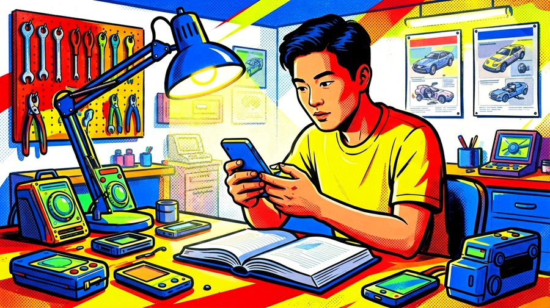
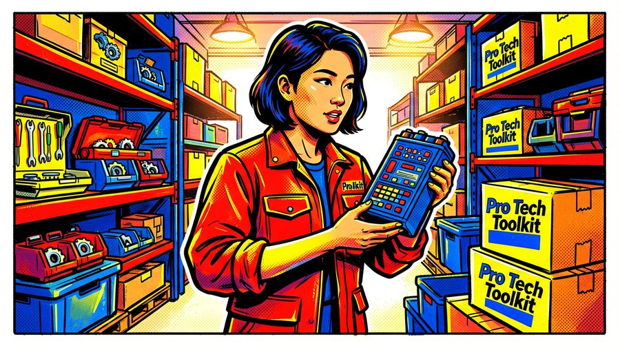
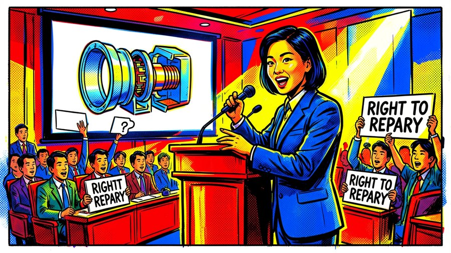
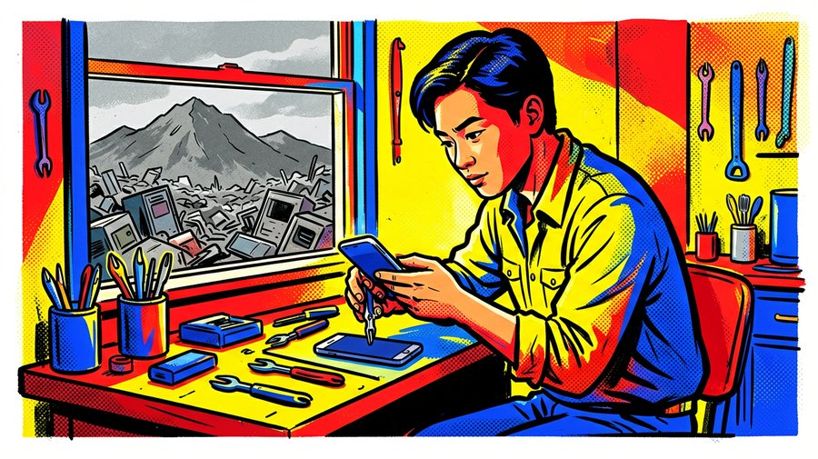

小汪老师的成长洞察 · 属于你的成长专栏
2003年，一台坏掉的iBook G3找不到维修手册。两个大学生自己做了一份放到网上。二十年后，这件事长成了一个年收入两千多万美元的公司、一个推动美国多州立法的政治力量，以及一场让千万人重新拿起螺丝刀的运动。iFixit教人拧螺丝，但拧开的是半个世纪以来“修不如换”的产业惯性。

记者：小汪老师，iFixit号称万物皆可修，从手机到汽车，是不是夸大了？
小汪老师：你去翻它的指南库。iPhone换电池、MacBook换屏幕、戴森吸尘器换电机、丰田卡罗拉换火花塞。每份指南分步拍照，标了难度、耗时、螺丝刀型号。不是简笔画，是实拍。主页那句话——“You can fix it—we show you how.”——是事实陈述。
记者：这得多少人维护？一个小公司不可能覆盖这么多品类。
小汪老师：内容三条线。第一条，专业团队，技术编辑加摄影师，拆新设备、做核心指南。第二条，社区贡献，任何人都能上传，知识共享协议，内容全开放。第三条，被它推着走的厂商。iFixit给产品打可修复分，把焊死的接口、一拆就碎的背板拍成高清照放网上。你不想上“最难修设备排行榜”，下次设计就收敛一点。它在用透明度对厂商施加一种没有法律强制力的市场压力。这个作用比任何一份指南都大。
记者：透明度能当武器？厂商真的在乎几个维修分？
小汪老师：在乎。当你的产品被标成“不可修复”，月活几千万的网站把你的拆解图挂在首页，潜在买家搜一下就能看到——那是销售转化率的直接损失。iFixit把“可修复性”变成了一个消费者可以比较的参数，就跟跑分、续航一样。厂商在乎的是这个。
记者：但苹果的电池还是粘得死死的，这不说明软监管没用？
小汪老师：有用没用是程度问题。苹果在MacBook Pro上把键盘和电池做成一体化，被iFixit打了1分，下一代就改回了可拆卸设计。你不能说它没用，只能说它还没赢。产业惯性是五十年的积累，不是一个网站十年就能扳过来的。但它已经证明了，透明度可以倒逼设计。

记者：免费指南怎么养活自己？这听起来像个公益项目。
小汪老师：零件和工具。你学会了怎么换屏幕，下一步就要买屏幕和螺丝刀。iFixit就是那个卖家。它的Pro Tech Toolkit，基本每个DIY玩家都知道。零件有质保，电池经过测试。商业闭环很简单：免费指南教你想修，你发现自己能修，你需要零件和工具，你从它这里买。指南是获客成本，零件是利润来源。
记者：那它跟普通电商有什么区别？不就是靠内容引流卖货？
小汪老师：区别在利益方向。普通电商希望你多买、换新。iFixit的收入和你维修成功率是同向的。你修好了，觉得值，下次坏了还来。Kyle Wiens说过：我们不靠内容收费，靠你成功修好之后要买的下一块电池赚钱。这个模型最聪明的地方是——它不希望你失败。因为失败了你不会再来。所以它的指南必须做到极致，工具必须可靠。它的商业利益和用户利益是绑在一起的，而大多数消费电子公司的利益和用户利益是冲突的——它们希望你换新。
记者：但这个模型天花板低吧？维修市场能有多大？
小汪老师：年收入两千多万美元，不算巨头，但足够让一个使命驱动的公司活得好。而且它的影响力远超收入——它通过社区和维修权运动撬动了立法和产业标准。如果你用“改变产业规则”来估值，它的杠杆率比很多独角兽都高。

记者：iFixit不止是个网站，背后有更大的事。维修权运动是怎么回事？
小汪老师：Right to Repair。核心诉求：你买的东西，你有权修，有权获得维修资料和零件，厂商不能用软件锁、焊死接口、独占零件来阻止你。iFixit是这场运动里最响的声音。它推动美国多个州通过维修权法案，提供听证会证词。2020年它联合电子前哨基金会起诉美国政府，因为DMCA数字锁条款阻碍维修。疫情期间，它和医疗机构合作，搜集整理了全球最大的医疗设备维修手册数据库。因为呼吸机坏了，厂商维修员来不了，医院没有手册不敢拆。iFixit说，人命等不起。
记者：这听起来像社会运动，不像公司行为。它为什么能做到这些？其他公司也有游说部门。
小汪老师：因为它有社区。几十万注册用户，上百万指南贡献者，这个社区本身就是政治力量。当立法听证的时候，iFixit能发动社区提交证词、打电话给议员。它的游说力量来自社区——立法者听到的不是CEO的承诺，而是普通人修手机的真实故事。而且它的透明度武器在这里也管用——它能把厂商的反维修行为拍成证据，直接放在立法者面前。传统游说靠钱，它靠信息透明和群众动员。
记者：那它跟传统的消费者权益组织有什么不同？
小汪老师：传统消费者组织替你投诉，替你打官司。iFixit给你一把螺丝刀，一份指南，让你自己修。你修好一次，就再也不想忍受不能修的产品。这个路径把消费者变成了行动者。维修权运动的力量来源不是律师和说客，是成千上万修过自己手机的人。

记者：iFixit跟苹果、三星这些公司，精神气质上有什么根本区别？
小汪老师：大多数科技公司的叙事方向是“未来”——这个东西很新，你的旧东西该换了。iFixit的叙事方向是“不坏的未来”——这个东西值得修，坏不等于终点。这不只是商业模式的差异，是对“消费”这个行为的基础定义不一样。主流消费电子把“拥有”定义为“使用到下一次换代”。iFixit把“拥有”定义为“你有权打开它、修它、继续用到你觉得它该退役的那天”。它恢复了一个被刻意模糊的事实：你买了一个东西，这东西是你的。打开它是你的权利。
记者：厂商说拆了就没保修，这不是有道理吗？万一你修坏了呢？
小汪老师：保修和拆机是两件事。你修坏的部分厂商可以不保，但不能因为你拆过机就拒绝保修无关的故障。法律上这叫“保修免责条款的合理范围”。iFixit推动的维修权法案就是要厘清这个边界。厂商把“拆机就失保”当成一刀切的惩罚，目的是阻止你获得维修的自主权。这是控制权问题，不是技术问题。
记者：所以iFixit最终对抗的，不是某家公司，而是一个产业惯性？
小汪老师：对。半个世纪以来，产业逻辑把消费品设计成不可修复的短期消耗品。可修复意味着标准化零件、不焊死的接口、留维修通道——每个要求都增加制造成本。不可修复的产品成本更低、换代更快、毛利率更高。从产业账本上看，不可修复是“更优”的。iFixit说，那笔看不见的成本——电子垃圾、资源浪费、消费者被剥夺的自主权——也必须记在账上。一台修不了就扔掉的手机，标价五百美元。维修权要你把另一笔账也算进去：换新手机要开采的稀土、要制造的碳排放、要填埋的垃圾。一旦把这笔账算进去，“不可修复更优”的算计就不一定成立了。Kyle Wiens写过一句话：“修理不是退路——修理是前线。” 这句话把iFixit的全部逻辑钉在了墙上。
尾声
下次你考虑换手机时，可以问自己：如果这台手机能修，你还会换吗？这个问题背后藏着一笔被藏了五十年的账——电子垃圾、资源开采、碳排放。我们习惯了“坏了就换”的便利，很少去想这个便利的代价是谁在付。iFixit把账单摊开了。维修权不是环保口号，是每个消费者在“修还是扔”那一刻投出的票。你决定修的那一刻，你就已经站在了前线——不是退路。
小汪老师的成长洞察 · 属于你的成长专栏